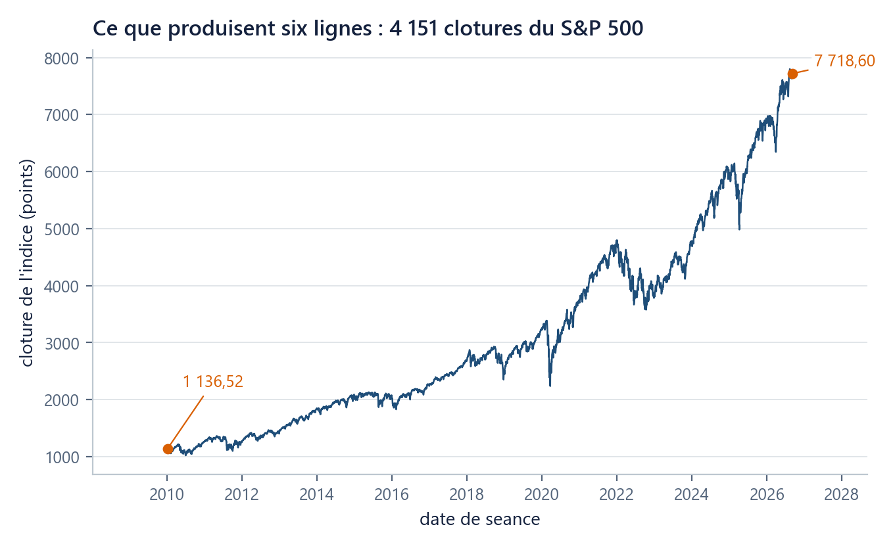

Outils : Python de zéro, sans rien installer
Six lignes suffisent pour voir seize ans de marché
Exécuter une cellule, c'est faire faire un travail à une machine et en regarder le résultat ; comprendre les six lignes n'est pas nécessaire pour cela.
Où suis-je ? unité 1 sur 8
Les unités du chapitre
- 01Six lignes suffisent pour voir…15 min
- 02Un nom retient un résultat…20 min
- 03Une liste range des prix dans l'ordre20 min
- 04Une boucle parcourt25 min
- 05Une fonction nomme un calcul20 min
- 06Un tableau numpy remplace la boucle25 min
- 07Votre machine devient l'ordinateur du cours30 min
- 08Huit fiches d'une page suffisent…45 min
Dans cette unité
Durée 15 min · Prérequis aucun, c'est la première unité du cours · Idée unique : exécuter une cellule, c'est faire faire un travail à une machine et en regarder le résultat ; comprendre les six lignes n'est pas nécessaire pour cela.
La question
Le 5 janvier 2010, l'indice S&P 500 (un nombre qui résume la valeur boursière de cinq cents grandes sociétés américaines cotées, chacune comptant à proportion de sa taille) a terminé la journée à 1 136,52. Le 4 septembre 2026, il a terminé à 7 718,60. Entre les deux, 4 151 séances : 4 151 journées où la bourse a ouvert, coté, puis fermé, chacune laissant un cours de clôture, c'est-à-dire le dernier prix traité avant la fermeture.
Ces deux nombres ne disent rien du chemin. La montée a-t-elle été régulière ? Où se voit le décrochage de mars 2020 ? Et 2022, réputée mauvaise année, se remarque-t-elle vraiment ? Un tableau de 4 151 lignes ne répond pas à ces questions : personne ne lit 4 151 nombres. Une courbe y répond en une seconde.
La question de cette unité n'est donc pas financière, elle est pratique : combien de temps faut-il pour faire apparaître cette courbe quand on n'a jamais écrit une ligne de code et qu'on n'a rien installé sur sa machine ?
On essaie d’abord
Deux réponses à écrire avant de lire la suite, sur papier ou dans une case de texte du document que vous allez ouvrir.
- Combien de minutes vous semblent nécessaires pour obtenir cette courbe, en partant de rien ?
- De 1 136,52 à 7 718,60, le niveau de l'indice a-t-il été multiplié par 3, par 7 ou par 15 ?
La seconde réponse tombe tout de suite : 7 718,60 ÷ 1 136,52 = 6,79. Beaucoup de lecteurs répondent 15, parce que la courbe qu'ils ont en tête est celle des trois dernières années, la plus raide. Gardez votre estimation de la question 1 sous les yeux : nous la confronterons à la fin.
L’idée
Trois objets à nommer avant de toucher au clavier
Ouvrez colab.research.google.com et mettez en place le notebook du chapitre en suivant les six gestes décrits dans chapitre.md, § « Zéro installation » : importer le notebook, puis téléverser mcdp_utils.py et le dossier data contenant les deux fichiers .csv. Trois minutes, une seule fois par session. Colab est un service qui vous prête, dans votre navigateur, une machine déjà équipée de Python : rien à installer, rien à configurer, et rien que vous puissiez casser sur votre propre ordinateur.
Ce que vous avez sous les yeux s'appelle un notebook : un document qui alterne des blocs de texte et des blocs de code. Un bloc s'appelle une cellule. À gauche de chaque cellule de code, un bouton en forme de triangle : exécuter cette cellule, c'est demander à la machine de faire ce qui y est écrit. Le raccourci clavier est Maj+Entrée, et c'est le seul geste à mémoriser aujourd'hui. Ce que la machine renvoie s'affiche juste en dessous : c'est la sortie.
Trois fichiers déposés à côté de vous
La machine que Colab vous prête est vide au démarrage. Les trois gestes du § « Zéro installation » y déposent exactement trois choses : le module du cours mcdp_utils.py, et les deux fichiers de données dans un dossier data. Vous pouvez les voir à tout moment dans le panneau « Fichiers », l'icône en forme de dossier dans la barre de gauche.
Vérifiez avant d'aller plus loin. Cliquez dans la cellule suivante et faites Maj+Entrée :
import os
print(os.path.exists("mcdp_utils.py"), os.listdir("data"))
# True ['prices.csv', 'returns_daily.csv']
Si vous lisez True puis les deux noms de fichiers, tout est en place. Si vous lisez False, le module n'a pas été téléversé ; si vous obtenez FileNotFoundError: 'data', c'est le dossier qui manque ou dont le nom n'est pas écrit en minuscules. Reprenez les six gestes de chapitre.md, ils prennent trois minutes.
Les six lignes
Copiez ceci dans la cellule suivante et faites Maj+Entrée.
import numpy as np
import matplotlib.pyplot as plt
from mcdp_utils import charger_fil_rouge
fil = charger_fil_rouge()
fig, ax = plt.subplots()
ax.plot(fil["dates"], fil["prix"]["SP500"])

Seize ans de marché sont à l'écran. Vous n'avez rien installé, rien compris, et la figure est juste.
Maintenant, une phrase par ligne
C'est l'ordre qui compte : la courbe d'abord, l'explication ensuite.
import numpy as np: une bibliothèque est une boîte à outils écrite par d'autres et livrée avec Python.importl'ouvre ;as nplui donne un surnom court, parce qu'on va l'écrire des centaines de fois.numpyest la bibliothèque de calcul sur des suites de nombres (unité u06).import matplotlib.pyplot as plt: même geste, pour la bibliothèque de dessin. Son surnom d'usage estplt.from mcdp_utils import charger_fil_rouge: cette fois on ne prend pas toute la boîte, mais un seul outil dans la boîte du cours, celle que la cellule 0 a téléchargée.fil = charger_fil_rouge(): les parenthèses signifient « fais-le maintenant ». L'outil va chercher les données du cours et rend un objet, que le signe=range sous le nomfil. Ce signe est le sujet entier de l'unité suivante.fig, ax = plt.subplots(): fabrique une figure vide (fig, la feuille) et son axe (ax, la zone où l'on a le droit de dessiner). Cette ligne ne dessine rien : elle prépare.ax.plot(fil["dates"], fil["prix"]["SP500"]): dessine. Les deux valeurs écrites entre les parenthèses s'appellent les arguments : ce qu'on donne à l'outil pour qu'il travaille (u05 y reviendra). Ici, dans l'ordre, ce qui va en abscisse (l'axe horizontal, les dates) et ce qui va en ordonnée (l'axe vertical, les clôtures du S&P 500).
Retenez la répartition des rôles (plt.subplots() fabrique, ax.plot dessine) et rien d'autre. Le vocabulaire des crochets [...] vient en u03.
Deux gestes qui font gagner du temps
Tapez charger_fil puis la touche Tab : Colab complète le nom. Tapez charger_fil_rouge? (avec le point d'interrogation) et exécutez : la documentation de l'outil s'affiche, y compris la liste de ce qu'il rend. Vous n'avez donc jamais à retenir un nom en entier ni à deviner ce qu'une fonction renvoie.
Changer un mot, changer d’actif
Remplacez "SP500" par "GLD" (un fonds adossé à l'or) et réexécutez la cellule. La même ligne de code produit une autre courbe, qui termine à 406,77. Le fichier contient huit actifs, huit séries de prix qu'on suit jour après jour : des indices, des actions et des fonds. Une nuance qui compte : une action ou un fonds s'achète et se revend, un indice se suit seulement, car c'est un nombre, pas un titre ; le fonds SPY du fichier est justement celui qui réplique le S&P 500 et qui, lui, s'achète. Les six du portefeuille qui servira de fil rouge à tout le cours sont SP500, CAC40, AAPL, LVMH, GLD, TLT.
Le piège : un message rouge est une phrase, pas un dégât
La croyance la plus coûteuse du débutant est qu'une erreur abîme quelque chose. Provoquons-en une exprès. Écrivez plott au lieu de plot :
fig, ax = plt.subplots()
ax.plott(fil["dates"], fil["prix"]["SP500"])
La machine répond, en rouge :
AttributeError: 'Axes' object has no attribute 'plott'. Did you mean: 'plot'?
Un AttributeError signale un outil demandé à un objet qui ne le possède pas. Lisez la phrase : elle nomme l'objet (Axes), le geste manquant (plott) et propose la correction. Réécrivez la bonne ligne, réexécutez : la figure sort. Puis vérifiez que rien n'a été perdu au passage.
print(len(fil["dates"])) # 4151
Les 4 151 dates sont toujours là. Rien n'a été effacé, ni sur la machine prêtée, ni dans le fichier de données, ni dans votre ordinateur. Une cellule qui échoue s'interrompt ; tout ce qui a été fait avant elle reste en mémoire. Un message rouge est une phrase qui vous dit ce que la machine n'a pas su faire : c'est le seul moyen qu'elle a de vous parler.
Vérifiez-vous
(a) Dans les six lignes, laquelle fabrique la figure et laquelle y dessine ?
Réponse
(b) (rétrospective) Vous avez exécuté la cellule de contrôle des trois fichiers sans y réfléchir. À quoi servait-elle, et que se passe-t-il si ces fichiers manquent ?
Réponse
(c) (rétrospective) Vous exécutez trois fois de suite la cellule des six lignes. Que voyez-vous ?
Réponse
(d) Demain, vous rouvrez l'onglet Colab : les six lignes sont toujours écrites, mais plus aucune figure ne s'affiche et fil semble inconnu. Pourquoi, et que faites-vous ?
Réponse
(e) Votre estimation de la question 1 était-elle plus haute ou plus basse que le temps réellement écoulé ?
Réponse
Ce que vous savez faire maintenant
- Ouvrir un notebook, reconnaître une cellule, l'exécuter par
Maj+Entréeet lire sa sortie. - Produire une figure à partir des données du cours, et en changer l'actif en changeant un mot.
- Lire un message d'erreur comme une phrase, corriger, réexécuter, sans rien avoir abîmé.
Unité suivante. La courbe est à l'écran, mais rien n'est gardé : impossible de calculer avec. L'unité u02 apprend à retenir un résultat sous un nom, et à réparer les quatre messages d'erreur qui bloquent la plupart des débutants.